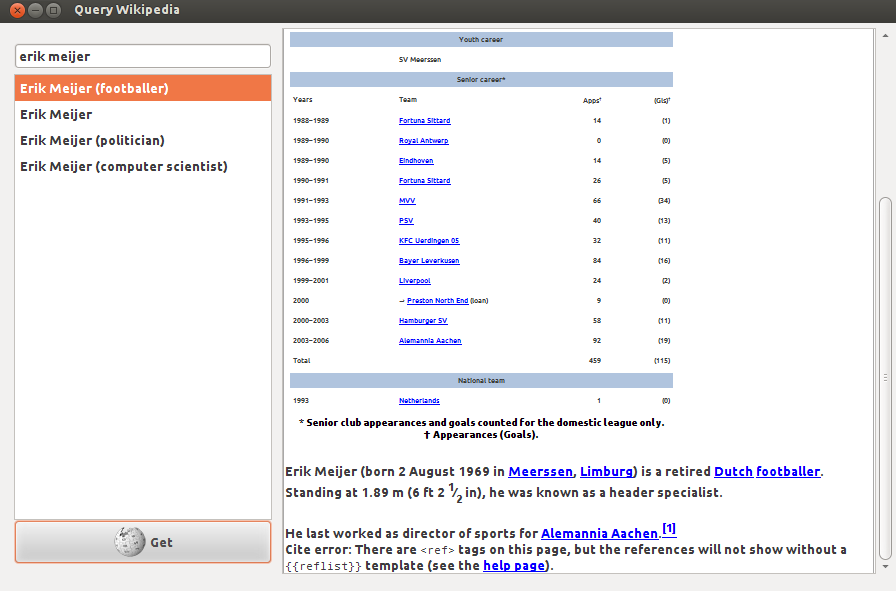

Wikipedia Suggestions: Instructions Help Center
Attention: You are allowed to submit an unlimited number of times! for grade purposes. Once you have submitted your solution, you should see your grade and a feedback about your code on the Coursera website within 20 minutes. If you want to improve your grade, just submit an improved solution.
To get started, download the suggestions.zip handout archive file and extract it somewhere on your machine.
In this exercise you will develop a reactive graphical user interface
for the Wikipedia Suggestions application. This application will allow
the user to enter a search term and in real time render a list of
possible completions of that search term from Wikipedia. After that, a
user will be able to select one of the suggested terms and click Get, which will render the desired wikipedia page.
Note: all the functionality you will be asked to implement in this assignment can be done using only the methods in the Scala wrapper of the Rx framework.
Short introduction
In this exercise you will use ScalaSwing to build a GUI for looking at Wikipedia pages. Later on, the Swing GUI-related code you write needs to be tested, and to do this, your program logic needs to be abstracted away from the Swing logic. If you would really like to understand the details of how the Swing code is abstracted, you can take a look at the appendix sections at the end of this document.
You should be able to solve this exercise completely without consulting the appendices, but if you get stuck with Swing, make sure to jump down to the end of this document!
Observable extensions
Most GUI toolkits are callback-based. They provide a plethora of
different UI components like buttons or text fields, which raise events
when something happens to them. If you click a button, a ButtonClicked event is raised and if you type into a text field, a ValueChanged
event is raised. To listen to these events, the programmer must install
callbacks to corresponding components. This approach of using callbacks
and mutable state for designing large scale applications can quickly
lead to what is known as the callback hell, due to the interactions between callbacks, where a programmer can no longer make sense of the code he wrote.
Instead of using callbacks, we would like to handle event streams.
Event streams are first-class values that are handled in a more
declarative fashion than callbacks and are more encapsulated. Event
streams can be represented using Rx Observables. In this part of the exercise you will implement several Observables
that emit values whenever a Swing component event is raised. This is a
common pattern when bridging between callback-based and reactive
stream-based systems – remember it well!
Your task is to implement the following methods in SwingApi.scala by using the Observable.create(f: Observer => Subscription) factory method. You will find these methods in the implicit classes for the TextFields and Buttons:
def textValues: Observable[String] = ???
def clicks: Observable[Button] = ???
Note: the clicks method should return an
observable containing the reference to the particular button that was
clicked (although in this assignment there will only be one single
button in the GUI).
Scala Swing components can be subscribed to by creating Reaction objects. These Reaction objects in essence wrap PartialFunctions that handle Scala Swing events that correspond to the component the Reaction
is used for. For the purpose of this exercise, you can ignore all
events other than button presses and changes to the textfield.
Be sure to understand the Observable contract before you begin.
Wikipedia suggestion utilities
In the last part of the exercise you implemented Observables over different input events. In this part you will implement some utility functions over Observables that will help you complete the GUI functionality in the final part. Creating Observables manually the way we did it in the last part is generally discouraged. Instead, you should use combinators on Observables wherever possible to compose them into more complex ones.
The Wikipedia API is factored out in the WikipediaApi trait. It contains two abstract methods:
def wikipediaSuggestion(term: String): Future[List[String]]
def wikipediaPage(term: String): Future[String]
These methods return futures with a list of possible
completions for a search term and the corresponding Wikipedia page,
respectively. However, search terms sent in an HTTP request cannot
contain spaces! Instead, all spaces in a search term should be replaced
with an underscore _. Your task is to implement a method sanitized in WikipediaApi.scala
that, given a stream of search terms returns a new stream of search
terms such that all the search terms containing spaces are properly
replaced. You will find the sanitized method in the StringObservableOps implicit class:
def sanitized: Observable[String] = ???
See description of Observable combinator methods for ideas on how to achieve this.
Observables might be completed with errors. When composing multiple Observables, errors from one of them can easily leak into the resulting Observable and complete it by calling onError. To prevent this from happening, any exceptions in the Observable should be wrapped into Failure objects that can be dealt with as if they were ordinary values. Your next task is to implement the method recovered which converts any Observable[T] into an Observable[Try[T]] (hint: consider using the map and onErrorReturn method):
def recovered: Observable[Try[T]] = ???
Next, implement a combinator timedOut that given an observable obs and takes a number of seconds totalSec, and returns a new observable that contains all the events from obs that happened before totalSec seconds elapse. If the obs
combinator is completed or failed before the timeout, the resulting
observable should also be completed or failed, respectively. If the obs combinator does not complete before the timeout, the resulting observable should be completed after the timeout.
def timedOut(totalSec: Long): Observable[T] = ???
Finally, sometimes observables are created from more than just one other observable. In our case, the list of suggestions depends on both the search field and the suggestions for each search term.
Your final task in this part is to implement a method concatRecovered that, given a request stream obs
and a method to map elements of the request stream (i.e. single
requests) into response streams, returns a single response stream that
contains all the responses, both successful and failed, wrapped into a Try object:
def concatRecovered[S](requestMethod: T => Observable[S]): Observable[Try[S]] = ???
Putting it all together
We now have all the ingredients to complete our Wikipedia Suggestions application! Open WikipediaSuggest.scala
– you will see the body of the main Scala Swing based application. The
pieces that concern the static part of the UI are already implemented
for you – your task is to add some reactive behavior to this
application.
The UI currently contains a text field called searchTermField. Your first task is to construct an observable of text field entries called searchTerms:
val searchTerms: Observable[String] = ???
Next, use the searchTerms observable to
create an observable of lists of suggestions in which each list of
suggestion corresponds to one search term. If any of the suggestion
lists requests fail (make sure you don’t wait forever), we would like to
have the throwable to print the error message, so we wrap the result
into a Try. Use the methods defined earlier in the WikipediaApi:
val suggestions: Observable[Try[List[String]]] = ???
The suggestions observable should now be
updated while you type. Problem is – there is no way to see these
changes yet in the UI! To display them, we need to update the contents
of a component called suggestionList every time the observable produces a value. If the suggestions value is not successful, we must print the error message into the status label. Use the subscribe method on suggestions to do this:
val suggestionSubscription: Subscription = ???
Note: all the updates for all the Swing components may
only take place from a special thread called the event dispatch thread.
To ensure that the subscription reaction takes place on the event
dispatch thread, use the observeOn combinator. See the ScalaDoc for more information.
Our application would be pretty boring if it were only able to give
search term suggestions. We would like to pick one of the search term in
the list of suggestions and press Get to obtain the contents of the corresponding Wikipedia page and display it in the panel on the right side of the UI.
Your next task will be to obtain an observable selections
of button clicks that contains the search terms selected in the
suggestion list at the time the button was clicked. If the suggestion
list had no items selected, then the click should not be part of selections.
val selections: Observable[String] = ???
Next, use the selections observable to
obtain an observable of the Wikipedia pages corresponding to the
respective search term (use the previously defined methods from the WikipediaApi):
val pages: Observable[Try[String]] = ???
Again, requests above may fail, so we want to wrap them into Try.
Finally, the observable pages is of little worth unless its values are rendered somewhere. Subscribe to the pages observable to update the editorpane with the contents of the response.
The final application should resemble the following screenshot. Run your application (type run
in SBT) and type in “Erik Meijer”, then select the first option from
the list and click “Get”. Below you see the corresponding Wikipedia
page. It tells us that Erik was previously a 6ft high professional
footballer, so you better not mess with him!

Appendix A: Extractors, custom pattern matching and the cake pattern
Before we get to Rx and our GUI application, we first need to visit some prerequisites. In Scala, pattern matching can be customized to do almost anything you like using a feature called extractors. Here is an example of how you can match prime numbers:
object Prime {
def unapply(x: Int): Option[Int] = if ((2 until x).forall(x % _ != 0)) Some(x) else None
}
1 match {
case Prime(x) => println("We like prime numbers!")
}
The crucial method for custom extractors is unapply. This method takes an object of type T and decides if an object can be matched or not. If its argument x can be matched into some value, it returns a Some[T]. If this pattern matching case should fail, it returns None. As long as there is a singleton object or a value named Prime in scope, you can use the pattern matching case case Prime(x) => to call Prime’s unapply method.
A careful reader may notice that the Prime extractor
defined above is particularly inefficient. A more efficient
implementation would check only the divisors smaller than the square
root of x. This means that there might be multiple
implementations of that extractor! Can we somehow write our code without
knowing how exactly Prime is implemented, and just mix in the correct implementation later?
The good news, the unapply method can even belong to an abstract value in scope! So, let’s make the Prime extractor abstract! How do we do that? One way to do this is to introduce a trait Mathematics and have an abstract value Prime there, with an interface PrimeExtractor that has a method unapply:
trait Mathematics {
type Number
trait PrimeExtractor {
def unapply(x: Number): Option[Number]
}
val Prime: PrimeExtractor
}
This trait Mathematics also abstracts over what Numbers are. They might be represented as ordinary integers, longs or even infinite length big integers. With the Mathematics API, if you have any such a Number, you can figure out if it’s prime, even though you don’t know its exact representation.
A concrete Mathematics implementation is then as follows:
trait FastIntegerMath extends Mathematics {
type Number = Int
object Prime extends PrimeExtractor {
def unapply(x: Int): Option[Int] = {
if ((2 to math.sqrt(x).toInt).forall(x % _ != 0)) Some(x) else None
}
}
}
object MyPrimeChecker extends FastIntegerMath {
def main(args: Array[String]): Unit = args(0).toInt match {
case Prime(x) => println(s"the number $x is indeed prime.")
case _ => println("not prime")
}
}
This pattern where the important parts of some API are abstracted away into members of a trait is called a cake pattern, because it allows you to pick your favorite implementation of an API just like you would pick flavors of different layers of a cake when baking it.
Appendix B: ScalaSwing
ScalaSwing is a Scala-based wrapper around the Java Swing API that allows you to write GUI applications in a concise, more declarative style. All the details of this framework are a bit too much for this exercise, and if you have no prior experience with GUI applications, this might be a bit overwhelming for you.
So, guess what? We will use the cake pattern we saw before to abstract over important parts of the Swing API. In this way, you will be spared from many details of the ScalaSwing framework and we will be able to use the same API later to make testing easier.
The first concept present in the ScalaSwing framework are Events. There are many different kinds of events, but let’s focus on only 2 for now. In the file SwingApi.scala you will find the following events:
type ValueChanged <: Event
val ValueChanged: {
def unapply(x: Event): Option[TextField]
}
type ButtonClicked <: Event
val ButtonClicked: {
def unapply(x: Event): Option[Button]
}
ValueChanged denotes that a value of a text field has changed, and ButtonClicked denotes that somebody pressed a button.
The next important concept are Reactions. These are just callbacks that you add to components and that can handle events. A Reaction is just a type alias for a partial function over events:
type Reaction = PartialFunction[Event, Unit]
Now, every Swing component (e.g. a button, text field or a combo box) can be subscribed to with reactions – it has methods subscribe and unsubscribe for this purpose. The type TextField also has an additional method text that returns the current text entered into the text field:
type TextField <: {
def text: String
def subscribe(r: Reaction): Unit
def unsubscribe(r: Reaction): Unit
}
type Button <: {
def subscribe(r: Reaction): Unit
def unsubscribe(r: Reaction): Unit
}
The components TextField and Button actually have many more methods, but these are the ones you need to care about. And you can already do much with this:
def printOutTextFieldChanges(field: TextField) = field subscribe {
case ValueChanged(tf) => println(tf.text)
}
If you want to know more about how SwingApi is implemented, find the trait ConcreteSwingApi in WikipediaSuggestions.scala and study it. However, this is pretty much everything you need to know about ScalaSwing for this assignment.